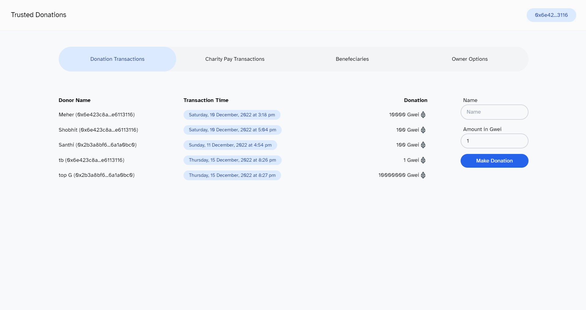
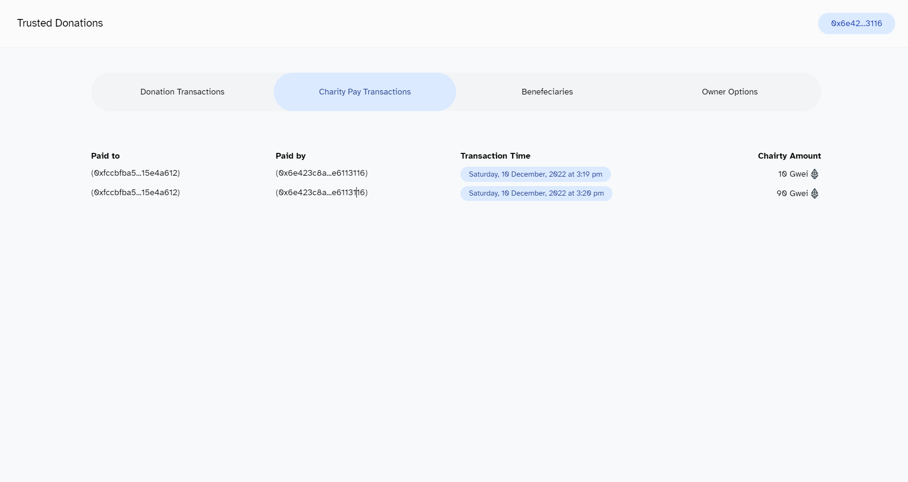
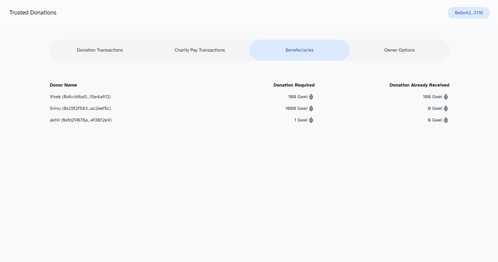
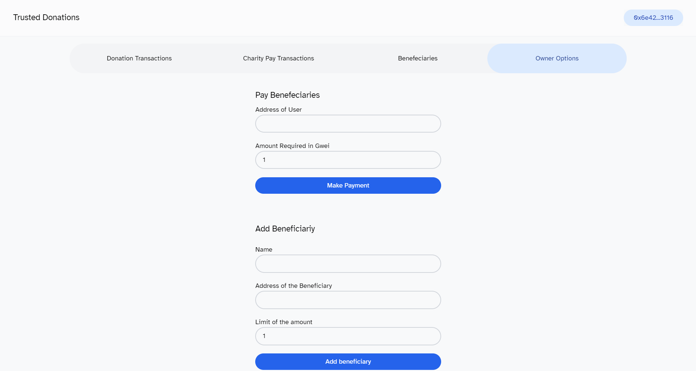

Towards a Decentralised web - Building Smart Contracts to support Transparent Charity Donations Trust
Read Time
~ 5 min read
Authors


Introduction
Charitable donations are an important way for individuals and organizations to give back to their communities and make a positive impact in the world. However, it can be difficult for donors to know where their money is going and whether it is being used effectively. This is where trusted transparent charity donations come in.
Trusted transparent charity donations are a new approach to charitable giving that utilizes smart contracts on the Ethereum blockchain network to ensure that donations are used in an accountable and transparent way. By using smart contracts, donors can track the movement of their donations in real-time and have confidence that their money is being used for the intended purpose.
In this blog post, we will take a closer look at how trusted transparent charity donations work, and how they are made possible through the use of smart contracts, Solidity programming, and the Ethereum blockchain network. We will also discuss how the frontend of the application is developed using Svelte and how the local environment is set up using Ganache and the Truffle Suite.
TL;DR
This project consists of a simple smart contract that tracks donations and functionality of transferring the required funds to the beneficiaries in need of money.
Project Description
How Trusted Transparent Charity Donations Work:
Trusted transparent charity donations are made possible through the use of smart contracts on the Ethereum blockchain network. Smart contracts are self-executing contracts with the terms of the agreement between buyer and seller being directly written into lines of code. They allow for the automation of contract execution, making it possible to track the movement of donations in real-time and ensure that they are being used for the intended purpose.
To create a trusted transparent charity donation application, developers can use the Solidity programming language to write the smart contracts that will be used to manage the donations. Solidity is a high-level, contract-oriented programming language specifically designed for the Ethereum platform. It allows developers to create complex, self-executing contracts that can be deployed on the Ethereum network.Donations are a great way to give back to the world by helping the person in needful. But many organizations being centralized can change and tamper the transactions
To use the trusted transparent charity donation application, donors will need to have a wallet provider that is compatible with the Ethereum network. This could be a hardware wallet, a software wallet, or a browser extension wallet. The wallet will allow donors to interact with the smart contract and send their donations to the designated charity.
Once a donor has sent their donation to the charity through the smart contract, the funds will be held in escrow until the charity can prove that they have used the funds for the intended purpose. This can be done through regular updates and reports that are uploaded to the blockchain, allowing donors to track the progress of their donations in real-time.
The frontend of the trusted transparent charity donation application is developed using the Svelte framework. Svelte is a modern JavaScript framework that allows developers to build fast and lightweight web applications. It is easy to learn and use, making it a popular choice for developing the frontend of blockchain-based applications.
To set up the local environment for the trusted transparent charity donation application, developers can use the Ganache tool and the Truffle Suite. Ganache is a local Ethereum blockchain that allows developers to test their smart contracts and applications in a simulated environment. The Truffle Suite is a collection of tools that help developers build, test, and deploy their blockchain-based applications.
Application Details
User Interface
This simple user interface consists of 4 sections dividing the functionalities of the application as:
- Making and Listing Donations
- Charity payments done to benefeciaries by the organization
- The benefeciary list
- Owner options that include creating the benefeciary and Paying the benefeciary

The first page as seen in the above image allows for the donors to look at the donations made to the organization. This application is designed to show the amount in Gwei for demo purposes. The donors are provided with a form to the right that prompts input details like the user name (optional) and the payment that need to be done in Gwei. Any amount below 1 Gwei is restricted in the contract logic. The Donor account address is automatically fetched from the tranasction and the record is added to the contract’s database.

The second page consists of Payments that the organization has done to the charity’s benefeciaries. The payments functionality through UI is provided in the owner options page but this page only provides the list of payment transactions to the Benefeciaries.

Continuing with the next page is the list of benefeciaries that are in the database of the contract that the organization will be paying the funds collected through donations.

The final page is the owner options page that consists of the features only a owner of the contract can access through. The owner list is stored in the contract through the account address and verified as a part of these functionalities.
- The first funtionality is the ability to add more benefeciaries to the charity organization.
- The second funtionality is the payments of funds to the benefeciaries based on the availability of total funds and the requirement of the benefeciary.
Conclusion:
Trusted transparent charity donations are a revolutionary new way for donors to give back to their communities and make a positive impact in the world. By using smart contracts on the Ethereum blockchain network, donors can track the movement of their donations in real-time and have confidence that their money is being used for the intended purpose. The trusted transparent charity donation source code is available on GitHub at https://github.com/smc181002/transparent-charity-donations, and the frontend code can be found in the dapp-fe directory, while the smart contract is located in the contracts directory.
Links & References
Github Repo - https://github.com/smc181002/transparent-charity-donations